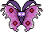
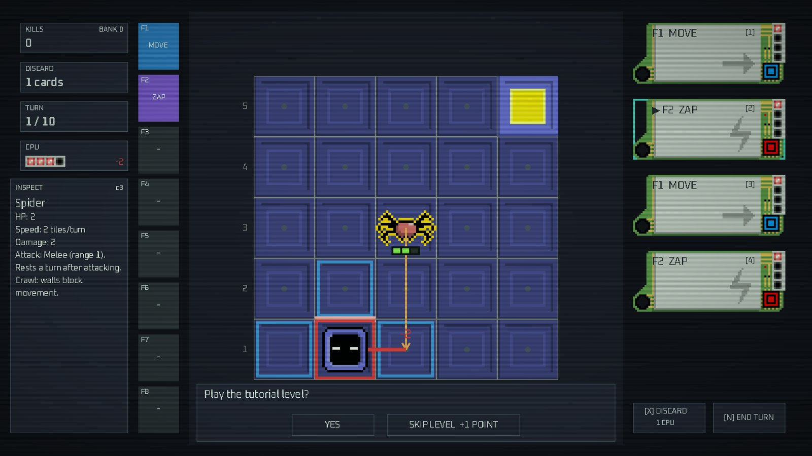
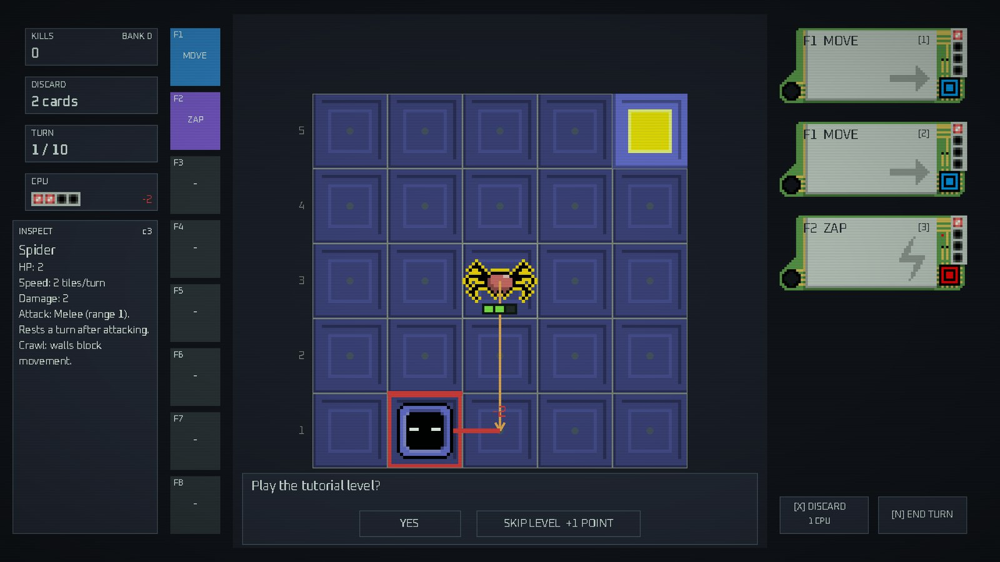
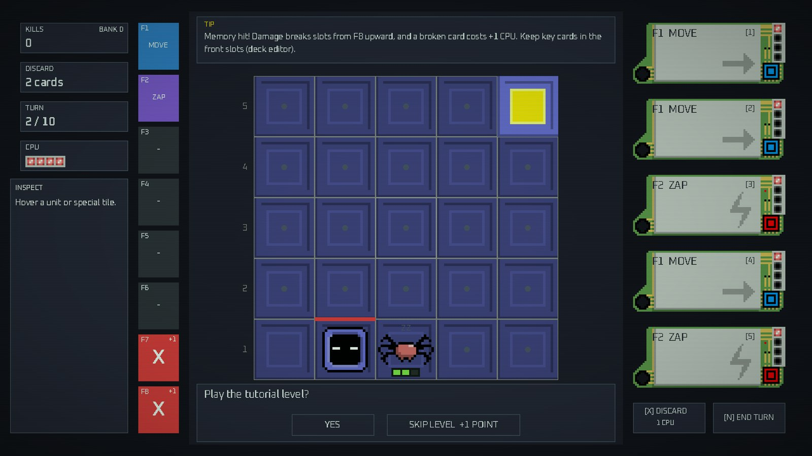
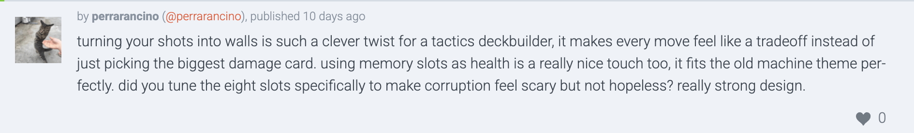
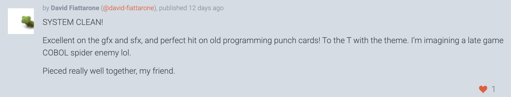
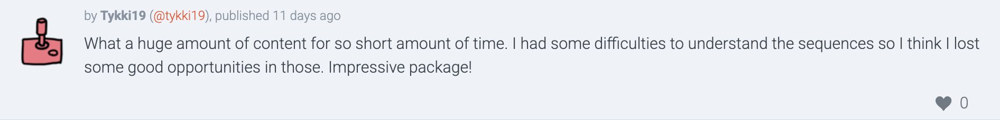
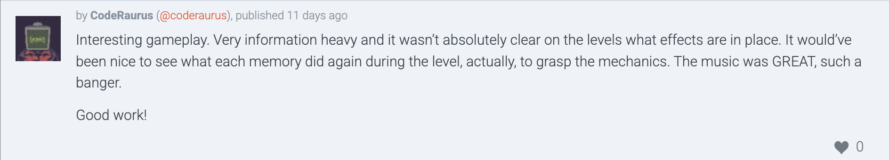
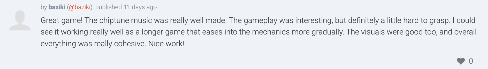
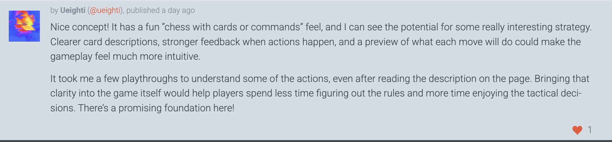

BIT ROT
A tactics deck builder where every shot builds a wall and every bite infects your memory.
Plays in the browser. Read Incoming before you end the turn: it is always exact.
01
Introduction
You are a debugger dropped onto a board of bugs. Every shot builds a wall, and every bite corrupts a card in your deck. There is no luck in combat: every bug’s next move is shown before you commit.
DRAW5 cards from your memory deck
SPEND4 CPU on cards
FIREThe side of your tile you fire from becomes a wall
READIncoming shows every bug’s path, attack and exact damage
ENDBugs move and bite; each point of damage corrupts a card



Memory is the health bar. Front slots put more copies of a card into the deck; damage corrupts from the back. Placing a card decides how often you draw it and how long it lasts.
4
4
3
3
2
2
1
1
slot 1 · copies in deck · drawn most, breaks lastdamage starts at slot 8 · corrupted = +1 CPU
02
Map design
There is no fixed map: walls only exist where someone fired. Each level gives the board one idea, and three bugs read walls in three different ways.
EXIT
One spider, two cards. Every rule is met once, on purpose.
EXIT
Two flies and a spider; seven cards unlock, including SEQUENCE. First real deck decisions.
EXIT
A wall line with one opening. Whoever holds the gap holds the level.
No exit: the boss must die. It phases through the block in the middle.
Fly · 1 HP · moves 3
Flies over walls, but cannot bite through them.
Spider · 3 HP · moves 2
Crawls around walls; bites hard (2).
Moth · 5 HP · moves 4 · boss
Phases through walls. Marks a row and column; they go off next turn.
03
Tutorial plan
The tutorial is level 1 itself: a 5 × 5 board, one spider with 2 HP, and only MOVE and ZAP in the deck. Each step waits for the action it asks for and highlights the one thing it is about.
The player takes a bite on purpose (step 5). Damage is the rule most likely to be misread, so it is shown happening before it can go wrong.
Step 7 teaches the central trick in one move: ZAP deals damage and builds the wall that blocks the next bite. ZAP then hits through that wall to finish the spider.
Players still found it dense: nine steps, all in one level. See the comments below.
- GoalReach the exit.
- SelectPick a MOVE card (click it or press its number).
- AimHover a highlighted tile to preview; click it again to play.
- ReadA red line means the spider will reach you and bite when you end the turn.
- Take the biteEnd the turn.
- MemoryEach damage breaks one memory slot, from slot 8 upward. A broken card costs +1 CPU.
- ZAPThe spider rests after biting. ZAP it: 1 damage and a wall on that side of your tile.
- Through the wallThe wall blocks its next bite. ZAP hits through walls: ZAP again to finish it.
- RewardBug killed: +1 upgrade point, banked when you clear the level. Now reach the exit.
04
Player’s comments
WHAT LANDED
Players described the trade-off, not the damage: shooting is also building, and health is also the deck. The theme was read through the rules, not just the art.



WHAT DID NOT
The rules were hard to learn: too much at once, some of it only outside the level. It points to card previews, memory effects kept visible in play, and one rule at a time.



05
Current status
Ludum Dare 60 is still in its rating period; final results come out when it closes. Where the entry stands on 1 November 2026:
23comments from 22 players
36ratings received (35.6, averaged across categories)
46comments we left on other entries
16replies we wrote to our own comments
Figures from the Ludum Dare entry page and its public API.
→